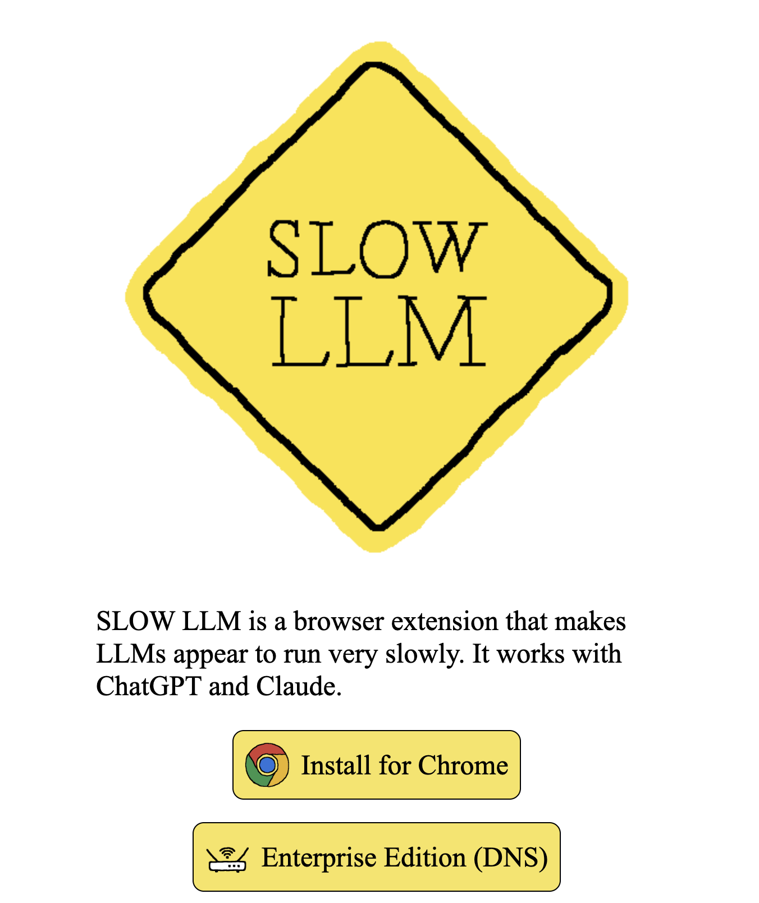
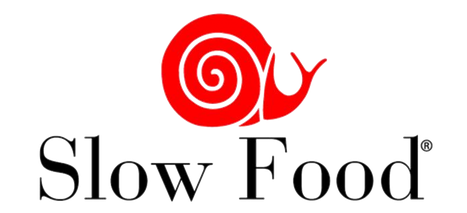
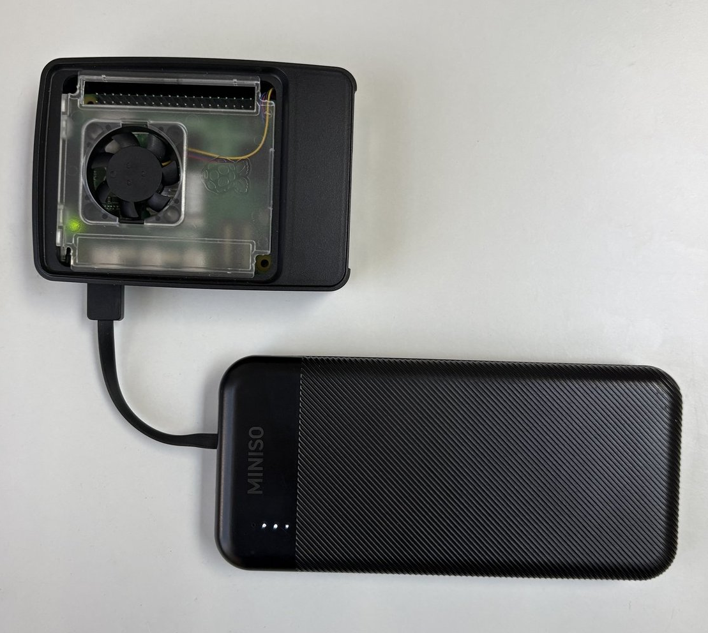
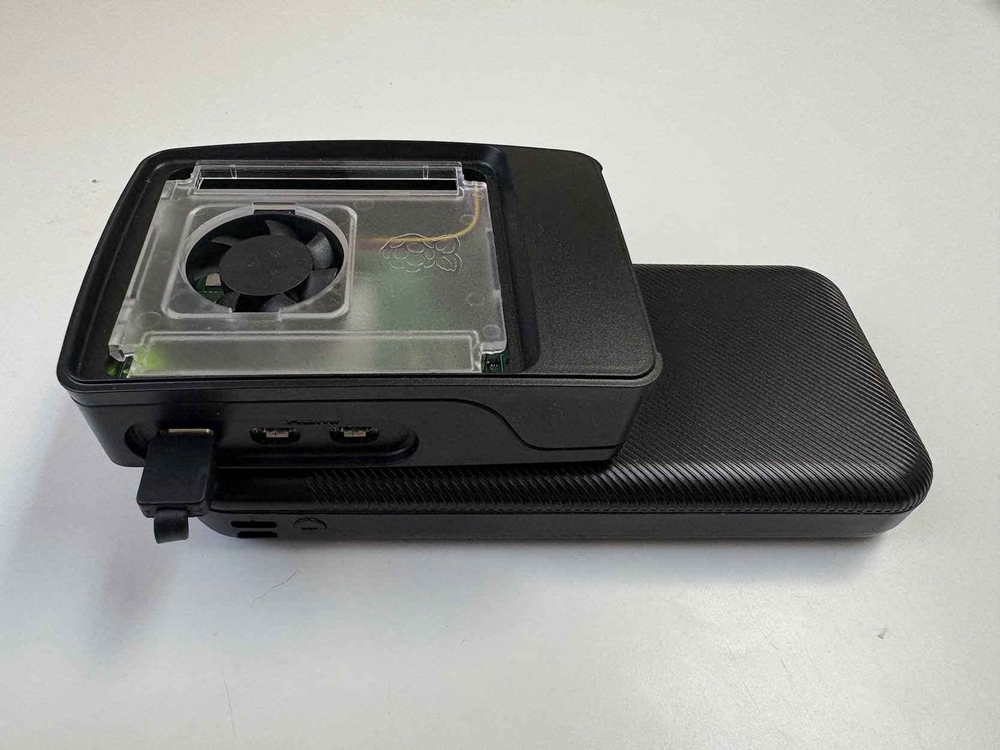
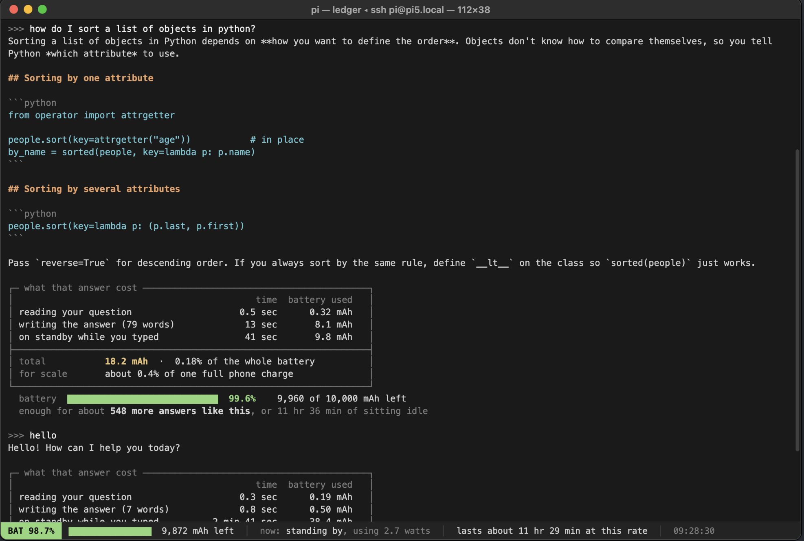

Summary
Inspiration
SLOW LLM by sam lavigne

slow food movement

opposes fast food culture and mass-produced meals, instead promoting local traditions, sustainable farming, and food that is:
- good: food should taste fresh, flavorful, and be connected to local culture and seasons
- clean: farming and production must protect the environment, biodiversity, and ecosystems without harmful chemicals
- fair: farmers and food workers deserve accessible prices for buyers and fair pay and conditions for themselves
Concept
a slow-by-design, limited-use LLM running locally on a raspberry pi that is constantly surfacing the resources used to make the text generation possible. the goal is to make us more mindful of our usage of this precious resource that we’re being conditioned to take for granted.
in a speculative future, subsidies on LLMs have run out and the government is rationing everyone’s usage. what we have is local AI running on our own devices but even then we have to be mindful of the resources they consume because that is limited too.
- computational resources: energy - electricity - watts/second converted to con edison cost in $ - effect on power grid - effect on local environment
- limited battery
- social cost: an instance where we are being anti-social per-generation, asking AI rather than another human
Demo
speed test of local model on raspberry pi 5
~1.5 tokens/second, many complain that it is too slow. but i argue that maybe we’re used to generation that is too fast because we’re so used to low-latency computation with its costs abstracted away from our sight.
photo
raspberry pi 5 powered by a power bank


mockup
macOS terminal mockup, SSH’d into a raspberry pi 5 running gemma3:1b, with a per-turn energy ledger drawn from a 10,000 mAh power bank.

next steps
- create an interdependent network of sharing tokens/compute similar to olia lialina’s summer, 2013
- how to fairly distribute limited compute to different communities?
- geography
- “need”?